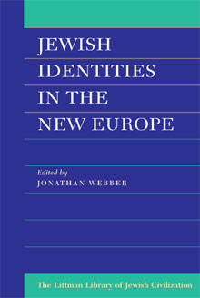

Jewish Identities in the New Europe
'Those
who care about the future of the Jews and Judaism, whether it be in Europe
or elsewhere, will find this a very welcome addition to the literature.'
Ephraim Tabory, Contemporary Jewry
How do the Jews of post-Holocaust, post-communist Europe—east and west—regard themselves: as a religious minority, an ethnic group, or simply as ordinary members of the communities in which they live? How do they regard non-Jews and relate to the Jews of other European countries? Is Israel a factor in forging these relationships? In confronting these questions, the contributors to this book—all of them writers with significant international reputations—cover a wide range of topics from different perspectives. Authoritative and accessible, the book is essential reading for anyone who wishes to know about the contemporary concerns of the Jews of Europe.
More info
How do the Jews of post-Holocaust, post-communist Europe—east and west—regard themselves? Do they perceive themselves as a religious minority, an ethnic group, or simply as ordinary members of the wider European cultures in which they live? How do they regard the wider non-Jewish community, and how do they relate to the Jews of other European countries? To what extent is Israel a factor in forging these relationships?
The contributors to this book are authorities in their respective subjects, and all have significant international reputations. Together they cover a wide range of topics from different perspectives. Among the problems considered are: what the future holds for the Jews of Europe; what it means to be Jewish in the countries of eastern Europe (Russia, Poland, and Hungary are considered in detail by local experts); hopes and uncertainties in religious trends; and the likely development of interfaith relations, as seen by both Jews and Christians. A well-argued introduction identifies the points of convergence, the contradictions, and the myths implicit in the different analyses and teases out the main conclusions and implications.
Authoritative and accessible, this book is essential reading for anyone who wishes to know about the contemporary concerns of the Jews of Europe.
Published for the Oxford Centre for Hebrew and Jewish Studies
About the author
Jonathan Webber is Professor in the Institute of European Studies, Jagiellonian University, Kraków. He was previously UNESCO Professor of Jewish and Interfaith Studies at the University of Birmingham, and is a former Fellow in Jewish Social Studies at the Oxford Centre for Hebrew and Jewish Studies and Lecturer in Social Anthropology, University of Oxford. He is the author of three other books to be published by the Littman Library: Rediscovering Traces of Memory: The Jewish Heritage of Polish Galicia and Traces of Memory: The Ruins of Jewish Civilization in Polish Galicia, both in collaboration with photographer Chris Schwarz, and Time, Memory, and Historical Consciousness in the Jewish Tradition (forthcoming).
Contributors
Geoffrey Alderman, Max Beloff, Margaret Brearley, Julius Carlebach, Mikhail Chlenov, Sergio DellaPergola, Evyatar Friesel, Pier Francesco Fumagalli, Konstanty Gebert, Daniel Gutwein, András Kovác, Igor Krupnik, Norman Lamm, Jonathan Magonet, Elisabeth Maxwell, Stephen H. Miller, Jonathan Sacks, Dominique Schnapper, Eliezer Schweid, David Singer, Norman Solomon, Shmuel Trigano, Jonathan Webber, Robert Wistrich
Contributor information
Max Beloff, Emeritus Professor of Government and Public Administration, University of Oxford; Emeritus Fellow of All Souls College, Oxford
Margaret Brearley, Fellow in Jewish-Christian Relations, Institute of Jewish Affairs, London
Julius Carlebach, Professor of Jewish History, Rector of the Hochschule für Jüdische Studien, Heidelberg
Mikhail Chlenov, Research Fellow, Institute of Ethnology and Anthropology, Russian Academy of Sciences, Moscow
Sergio DellaPergola, Head, Division of Jewish Demography and Statistics, A. Harman Institute of Contemporary Jewry, Hebrew University of Jerusalem
Evyatar Friesel, Professor of Modern Jewish History, Hebrew University of Jerusalem
Pier Francesco Fumagalli, formerly Secretary to the Holy See's Commission for Religious Relations with the Jews, Pontifical Council for Promoting Christian Unity
Konstanty Gebert, journalist, Warsaw
Daniel Gutwein, Lecturer in Modern Jewish History, University of Haifa and Hebrew University of Jerusalem
András Kovác, Senior Research Fellow, Institute of Sociology, Eötvös Loránd University, Budapest
Igor Krupnik, Institute of Ethnology and Anthropology, Russian Academy of Sciences, Moscow
Norman Lamm, President of Yeshiva University; Professor of Jewish Philosophy, Yeshiva University
Jonathan Magonet, Principal of Leo Baeck College, London
Elisabeth Maxwell, founding Chairman, 'Remembering for the Future'
Stephen H. Miller, Dean of the School of Social Sciences, City University, London
Jonathan Sacks, Chief Rabbi of the United Hebrew Congregations of the Commonwealth
Dominique Schnapper, Director of Studies, Ecole des Hautes Etudes en Sciences Sociales, Paris
Eliezer Schweid, Professor of Modern Jewish Thought, Hebrew University of Jerusalem
David Singer, Director of Research, American Jewish Committee
Norman Solomon, founder and Director, Centre for the Study of Judaism and Jewish-Christian Relations, Birmingham
Shmuel Trigano, Professor of Sociology, Université de Paris X (Nanterre); Director, Collège des Etudes Juives, Alliance Israélite Universelle
Jonathan Webber, UNESCO Professor of Jewish and Interfaith Studies, University of
Birmingham
Robert Wistrich, Professor of Modern Jewish History, Hebrew University of Jerusalem
Contents
Foreword
Preface and acknowledgements
Introduction JONATHAN WEBBER
Part 1 A Changing Europe
1 The Jews of Europe in the Age of a New Völkerwanderung MAX BELOFF
2 Changing Jewish Identities in the New Europe and the Consequences for Israel
ELIEZER SCHWEID
Part 2 Demographic and Sociological Considerations
3 An Overview of the Demographic Trends of European Jewry SERGIO DELLAPERGOLA
4 Modern Jewish Identities JONATHAN WEBBER
5 Judaism in the New Europe: Discovery or Invention? NORMAN SOLOMON
Part 3 Hopes and Uncertainties in Religious Trends
6 The Jewish Jew and Western Culture: Fallible Predictions for the Turn of the
Century NORMAN LAMM
7 From Integration to Survival to Continuity: The Third Great Era of Modern
Jewry JONATHAN SACKS
8 The Role of the Rabbi in the New Europe JONATHAN MAGONET
Part 4 Jewish Communities in Former Communist Countries
9 Jewish Communities and Jewish Identities in the Former Soviet Union MIKHAIL
A. CHLENOV
10 Constructing New Identities in the Former Soviet Union: The Challenge for
Jews IGOR KRUPNIK
11 Changes in Jewish Identity in Modern Hungary ANDRAS KOVACS
12 Jewish Identities in Poland: New, Old, and imaginary KONSTANTY GEBERT
Part 5 Jewish Communities in Western Europe
13 Israélites and Juifs: New Jewish Identities in France
DOMINIQUE SCHNAPPER
14 The Notion of a 'Jewish Community' in France: A Special Case of Jewish Identity
SHMUEL TRIGANO
15 British Jewry: Religious Community or Ethnic Minority? GEOFFREY ALDERMAN
16 Religious Practice and Jewish Identity in a Sample of London Jews STEPHEN
H. MILLER
17 Jewish Identity in the Germany of a New Europe JULIUS CARLEBACH
Part 6 Rethinking Interfaith Relations in a Post-Holocaust World
18 The Dangers of Antisemitism in the New Europe ROBERT S. WISTRICH
19 The Holocaust as a Factor in Contemporary Jewish Consciousness EVYATAR FRIESEL
20 The Impact of Auschwitz and Vatican II on Christian Perceptions of Jewish
Identity ELISABETH MAXWELL
21 A New Catholic-Jewish Relationship for Europe PIER FRANCESCO FUMAGALLI
22 Possible Implications of the New Age Movement for the Jewish People MARGARET
BREARLEY
Part 7 Jewish Europe as Seen from Without
23 The New Europe and the Zionist Dilemma DANIEL GUTWEIN
24 Jewish Renewal in the New Europe: An American Jewish Perspective DAVID SINGER
Notes on Contributors
Index
Reviews
'Webber's introductory essay and his chapter on Jewish identity are particularly
effective in highlighting the impact of a European environment on its Jews.
Indeed, the reader encounters comparisons throughout the book that span countries
and history, or is led to such comparisons by the different foci of the various
articles. . . . Webber's volume has the potential to stimulate further empirical
research in Europe, as well as shedding light on the situation there for non-Europeans
who tend to overlook that continent. Those who care about the future of the
Jews and Judaism, whether it be in Europe or elsewhere, will find this a very
welcome addition to the literature.'
Ephraim Tabory, Contemporary Jewry
'A rich book, containing many interesting insights and observations . .
. excellent introductory survey by Jonathan Webber.'
André W. M. Gerrits, Ethnic & Racial Studies
'The twenty-four contributors to this excellent collection of essays are
distinguished academic and spiritual leaders of present-day Jewry, mainly in
Europe, who have devoted much thought to the problems confronting our people
in the modern Western world. . . . The topics covered are varied and important.'
Miriam Kraus, Jerusalem Post
'Timely . . . an impressive assortment of views, wide-ranging in their
scope, analysing demographic, sociological and religious trends, surveying particular
communities in Eastern and Western Europe, looking at inter-faith relations,
and the role of Israel and the Holocaust in defining contemporary Jewish identity
. . . interesting, informative and challenging.'
Valerie Monchi, Jewish Chronicle
'Some of the essays in this volume seem already to have been overtaken
by events, while other remain strikingly prescient. Taken as a whole, however,
this book is a useful contribution to the contemporary debate over the nature
of the new Europe, while offering valuable insights for the study of modern
Jewish history.'
John D. Klier, Journal of European Studies
'The strength of the compilation lies in the wide variety of viewpoints
that originate not simply from Europe but also from Israel and the United States
. . . the breadth of coverage in the 290 pages is remarkable . . . Readers interested
in a particular approach or topic should scan the contents carefully and use
them in conjunction with the concise biographical notes to pinpoint articles
to meet their needs. They will be helped in this by Jonathan Webber's comprehensive
analytical introductory essay which also points straightforwardly to what is
missing from the discussion.'
Marlena Schmool, Le'ela

328 pages, 1 text figure, 9 tables
ISBN 978-1-874774-15-0
£18.95 / $29.95
Published 1994
Other books by this author:

Rediscovering Traces of Memory
The Jewish Heritage of Polish Galicia
Jonathan Webber, photographs by Chris Schwarz
Time, Memory, and Historical Consciousness in the Jewish Tradition
Traces of Memory
The Ruins of Jewish Civilization in Polish Galicia